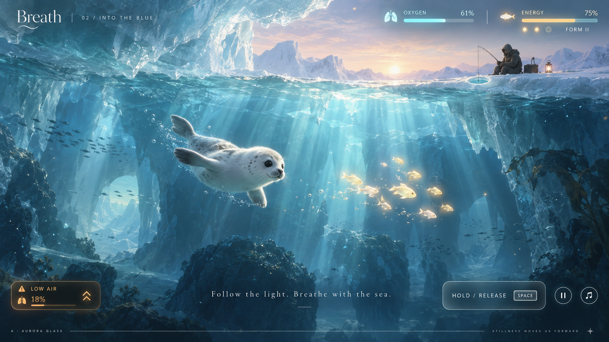
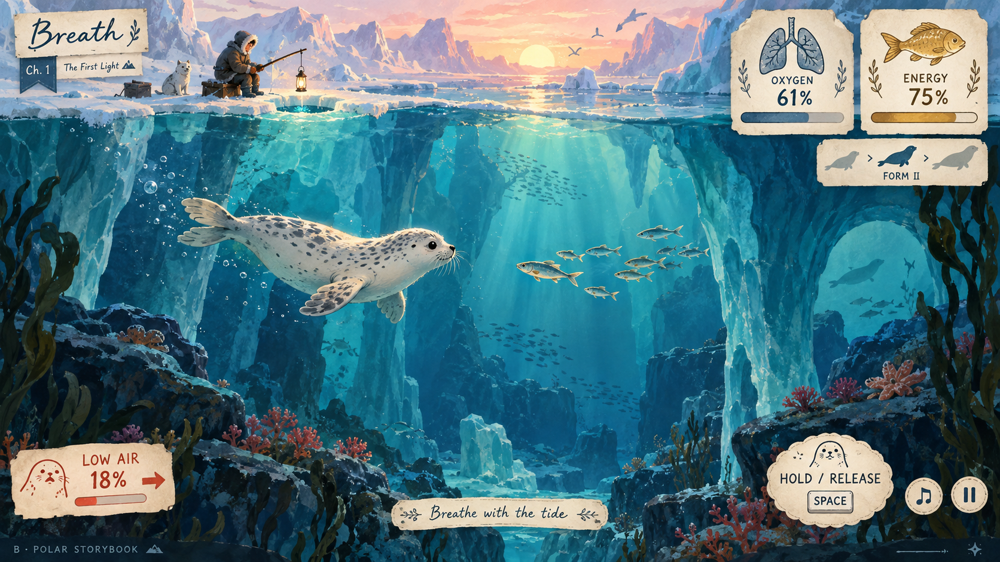
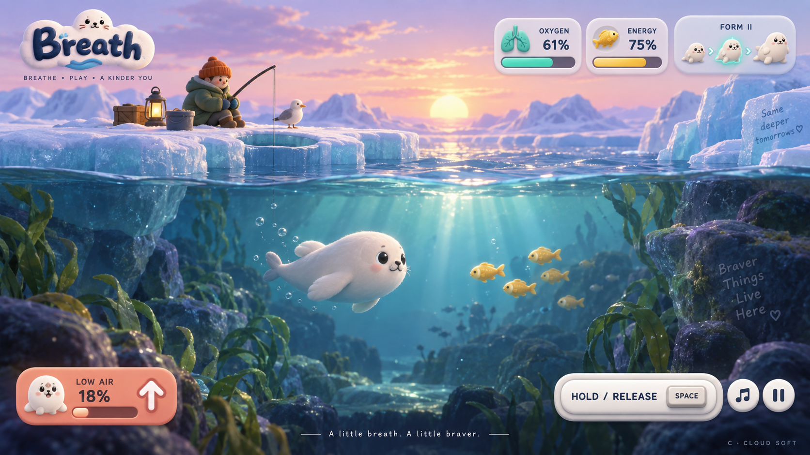

A · 極光玻璃
細線、半透明霧面、低存在感。適合把視線留給光影與音樂，最接近現在的介面方向。

三張由內建 imagegen 生成的 UI 概念圖，供未來替換介面時選擇。這些是風格參考，並非目前遊戲截圖；示意數值與文字不代表實際遊戲狀態。
細線、半透明霧面、低存在感。適合把視線留給光影與音樂，最接近現在的介面方向。

紙張、水彩、手繪肺與魚。適合強化 2D 繪本的溫暖與敘事感，警告改用珊瑚色筆觸。

圓角、柔軟立體按鈕、表情海豹。適合突出吃魚成長與角色互動，指標辨識度最高。
